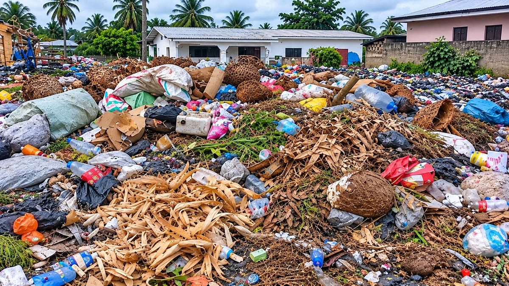
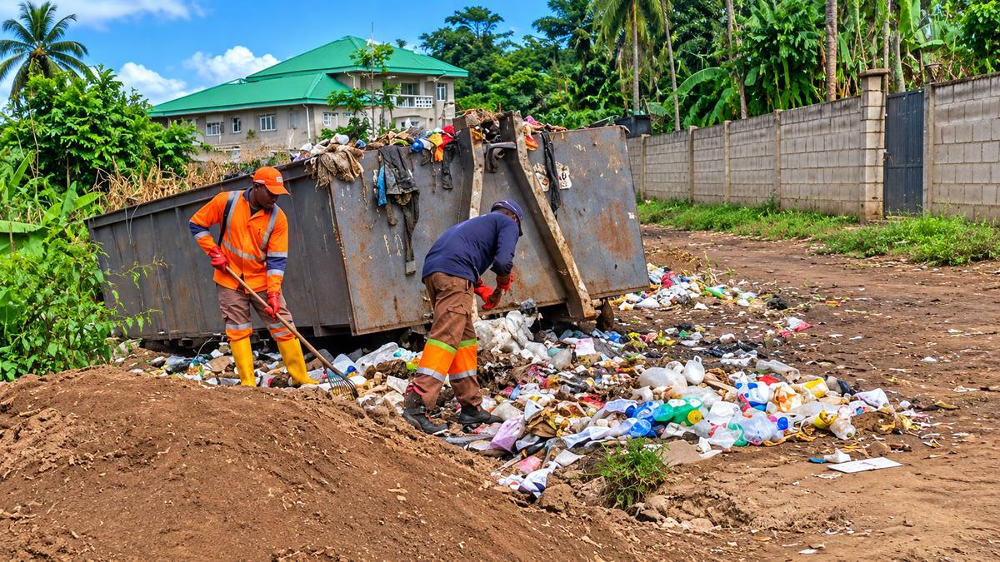
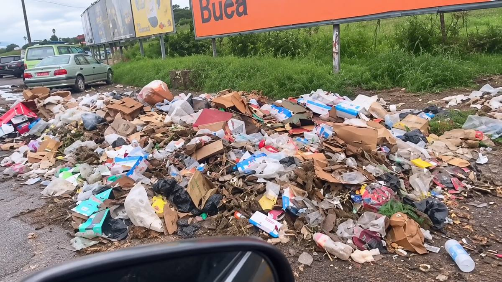
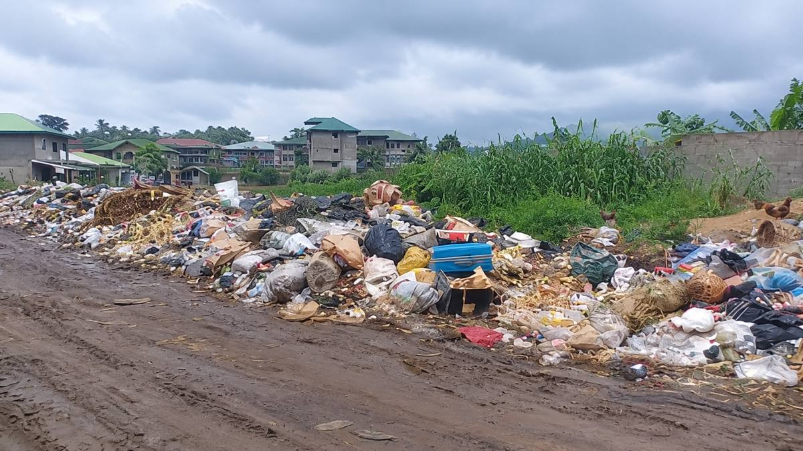
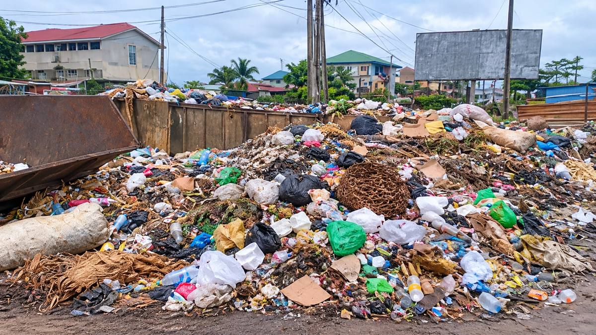

REPORT WASTE
Waste piling up on your street?
Let HYSACAM know where it is
Report waste heaps in your neighbourhood so a collection team can be sent to clean them

FULL DUSTBINS
Overflowing dustbins
Report them before they spread
A full or damaged dustbin affects the whole street. Tell us which one it is and where it stands

ILLEGAL DUMPING
Waste dumped by the roadside
Help us find dumping spots
Waste left beside the road or near homes can be reported with a clear location and a short description

MISSED COLLECTION
Collection did not come?
Report a missed pickup
Tell us the area and the street so the team can follow up and collect the waste

A CLEANER KUMBA
Together we keep Kumba clean
Every report makes a difference
Your reports help HYSACAM monitor waste points and keep our town healthy
✔Simple form🔔Status updates🌿A cleaner Kumba
HOW IT WORKS
How to submit a report
Four quick steps from spotting waste to following the clean-up
- 1
Sign in
You need an account to follow your reports, so tapping Submit a Report takes you to sign in first
- 2
Tap Submit a Report
Use the Submit a Report button at the bottom of this page or the green Report button, and the form opens right here with a progress bar
- 3
Fill in the details
Choose the issue type, enter your area, the exact spot (street, landmark or building) and describe what you see
- 4
Send and track
Tap Submit report and it appears under Your Reports with a reference code, where you can open it to see its status and any update from the team
What the statuses mean
SubmittedWe received your report
In ReviewThe team is reviewing, assigning or working on it
ResolvedThe issue has been dealt with
ClosedThe report was closed, so check the team update on the card for details
Your Reports
Report Statistics
–Total
–Pending
–Resolved
–Closed
Track Your Reports
Keep an eye on the status of your submitted reports
Ready to report?